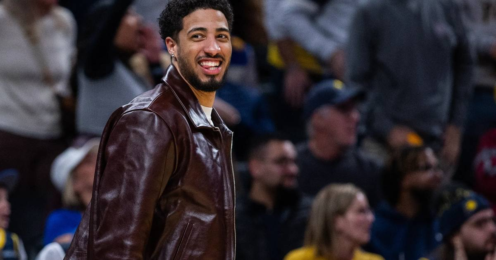

Tyrese Haliburton Scores 23 in Emotional Return as Pacers Edge Pelicans 123-120
Tyrese Haliburton waited 486 days for a game that counted. In his first action since tearing his Achilles in Game 7 of the 2025 Finals, he dropped 23 points and 12 assists — and took over the fourth quarter of Indiana's 123-120 season-opening win in New Orleans.

Disclosure: this post contains affiliate links. I earn a commission on qualifying purchases.
Tyrese Haliburton hadn't played in a game that counted in 486 days. On Wednesday night in New Orleans, he made every one of them feel worth the wait: 23 points and 12 assists in his first official game since rupturing his right Achilles tendon in Game 7 of the 2025 NBA Finals, willing the Pacers to a 123-120 season-opening win over the Pelicans.
Then he fought back tears on the postgame broadcast. "It means a lot to be back out here," he said, towel in hand. "I'm just really thankful."
The comeback
The numbers tell the story of the layoff: Haliburton tore the Achilles in Game 7 against the eventual champion Thunder, missed all of last season, and watched Indiana go 19-63 — the second-worst record in the Eastern Conference. He played his first game in 16+ months in a preseason exhibition on Oct. 7 (7 points, 6 assists in 16 minutes) and admitted the rust would take time to shake.
It didn't look rusty for long. He played 33:31, shot 8-of-15 from the field and a perfect 5-of-5 from the line, and ran the offense like he'd never left.
The fourth quarter takeover
Indiana trailed by 10 at halftime (66-56) and didn't retake the lead until five minutes remained. Then Haliburton took the game over:
• With the Pacers down 101-93, he scored 8 of Indiana's 10 points in a 90-second span, fueling a 15-3 run that flipped it to 108-104.
• After Zion Williamson tied it at 116, Haliburton scored on power moves on the next two trips for a 121-118 lead.
• He also picked up a technical for taunting Derik Queen in the fourth — the old edge is back too.
The supporting cast
• Pascal Siakam: 30 points (13/23), including 12 in the fourth quarter.
• Andrew Nembhard: 18 points, 9 assists.
• Obi Toppin: 20 off the bench.
• Ivica Zubac: 16 points, 15 rebounds.
• Indiana did it short-handed and on the road — without T.J. McConnell, Aaron Nesmith and Johnny Furphy.
For New Orleans: Dejounte Murray had 23 points and 7 assists, Zion Williamson added 22 — including back-to-back threes in the final minute of the half after making just 1 of 4 all last season — and Yves Missi compiled 13 points, 14 rebounds and 3 blocks. Williamson missed a finger roll with the Pelicans down 3 in the final minute, and Jeremiah Fears and Williamson both missed threes in the dying stages.
Up next: Pacers host Milwaukee on Friday night. Pelicans visit Utah.
Sources: Reuters · Sportsnet · ClutchPoints · NY Post · NBC Sports
Gear up: Sports category post → [Fanatics](https://fanatics.93n6tx.net/WOLjqe): via Fanatics